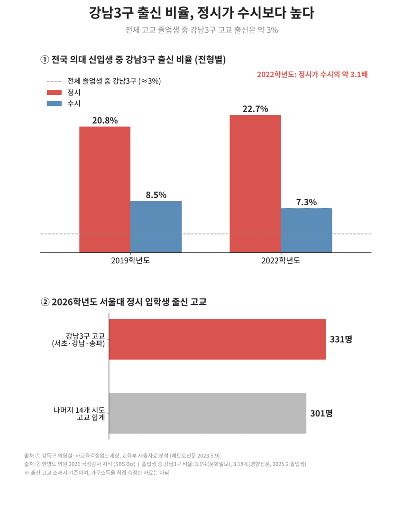

사실 수시가 더 부모 재산의 영향을 덜 받아서
사회적 부를 재분배하는 효과가 정시보다 훨씬 크기 때문임
"엥? 수시는 뒷돈주고 날먹 입학할수 있어서 부자만 좋은거 아님?" 이라고 많이 생각하는데
그건 "정시는 대리시험 부정행위로 날먹 입학할수 있어서 공부 못하는 애들만 좋은거 아님?" 과 비슷한 수준의 담론임
물론 뒷돈주고 수시로 들어가는 애들도 있음
부정행위로 수능 만점받는 애들도 있는 것처럼 ㅇㅇ
근데 걔네는 시스템 전체를 놓고 보면 극소수
사회 전체로 놓고 보면 아무 의미없는 예외 사례임
전체적으로 보면
정시가 초고액 사교육을 존나게 때려박을 수 있는 좆부자들에게 훨씬 유리한 제도고
수시가 훨씬 더 가난하고 힘없는데 열심히 노력한 사람에게 유리한 제도임
정치인들이 꾸준히 수시를 확대하는 것도
물론 본인들 자식을 뒷돈주고 대학 보내주고 싶어서 그러는 사람도 있긴 할 테지만
그보다 더 큰건
"수시를 확대해야 부가 재분배되어 그만큼 사회가 안정되고
결과적으로 기존 권력층의 재집권에 도움이 되기 때문" 임
물론 이렇게 말해줘도
사람들은 정시가 가진 공정한 "느낌"에 주목하기 때문에
절대 받아들이려 하지 않음
댓글
수집 당시 댓글 719개
ㅇㅇ · 11.21 15:09:10
· ㅇㅇ · 11.21 15:10:50
ㅇㅇ · 11.21 15:10:55
ㅇㅇ · 11.21 15:11:18
ㅇㅇ · 11.21 15:14:48
엘갤러 · 11.21 15:15:25
ㅇㅇ · 11.21 15:17:13
· ㅇㅇ · 11.21 16:24:30
ㅇㅇ · 11.21 15:18:20
삭제됨 · 11.21 15:19:32
· ㅇㅇ · 11.21 15:33:58
· ㅇㅇ · 11.21 15:35:40
· ㅇㅇ · 11.21 15:40:14
· ㅇㅇ · 11.21 15:42:17
· ㅇㅇ · 11.21 15:46:24
· ㅇㅇ · 11.21 15:58:40
ㅇㅇ · 11.21 15:23:58
· ㅇㅇ · 11.21 15:33:32
ㅇㅇ · 11.21 15:26:42
ㅇㅇ · 11.21 15:31:30
· 펨대남담당일진 · 11.21 15:49:22
ㅇㅇ · 11.21 15:31:50
· ㅇㅇ · 11.21 15:32:58
ㅇㅇ · 11.21 15:33:37
ㅇㅇ · 11.21 15:36:24
ㅇㅇ · 11.21 15:39:49
ㅇㅇ · 11.21 15:40:29
ㅇㅇ · 11.21 15:41:15
ㅇㅇ · 11.21 15:41:56
· ㅇㅇ · 11.21 15:47:48
ㅇㅇ · 11.21 15:43:18
삼갤러 · 11.21 15:44:03
ㅇㅇ · 11.21 15:44:41
ㅇㅇ · 11.21 15:45:23
ㅇㅇ · 11.21 15:45:54
ㅇㅇ · 11.21 15:49:00
ㅇㅇ · 11.21 15:49:46
ㅇㅇ · 11.21 15:50:51
ㅇㅇ · 11.21 15:52:11
ㅇㅇ · 11.21 15:54:40
ㅇㅇ · 11.21 15:55:01
· ㅇㅇ · 11.21 15:56:44
· ㅇㅇ · 11.21 16:17:46
ㅇㅇ · 11.21 15:55:05
나조정호 · 11.21 15:56:34
ㅇㅇ · 11.21 15:57:18
ㅇㅇ · 11.21 15:58:56
히이잉 · 11.21 15:59:09
ㅇㅇ · 11.21 15:59:17
ㅇㅇ · 11.21 15:59:24
ㅇㅇ · 11.21 16:01:47
노랑침팬지 · 11.21 16:02:45
· 노랑침팬지 · 11.21 16:03:10
내꿈은기생수! · 11.21 16:05:02
ㅇㅇ · 11.21 16:07:03
· ㅇㅇ · 11.21 16:07:13
1 · 11.21 16:09:21
ㅇㅇ · 11.21 16:10:23
ㅇㅇ · 11.21 16:16:21
ㅇㅇ · 11.21 16:25:03
ㅇㅇ · 11.21 16:27:31
· ㅇㅇ · 11.21 16:28:01
· ㅇㅇ · 11.21 16:55:57
ㅇㅇ · 11.21 16:29:11
ㅇㅇ · 11.21 16:35:33
FT-FWMC · 11.21 16:37:02
· FT-FWMC · 11.21 16:39:07
ㅇㅇ · 11.21 16:39:38
· ㅇㅇ · 11.21 16:42:01
ㅇㅇ · 11.21 16:50:36
ㅇㅇ · 11.21 16:52:47
ㅇㅇ · 11.21 17:22:57
ㅇㅇ · 11.21 17:26:37
ㅇㅇ · 11.21 17:27:11
ㅇㅇ · 11.21 17:27:58
ㅇㅇ · 11.21 17:29:16
ㅇㅇ · 11.21 17:37:58
(⌒,_>⌒) · 11.21 17:54:40
· (⌒,_>⌒) · 11.21 17:55:31
ㅇㅇ · 11.21 17:56:32
ㅇㅇ · 11.21 18:02:36
ㅇㅇ · 11.21 18:04:04
ㅇㅇ · 11.21 18:04:29
ㅇㅇ · 11.21 18:06:40
ㅇㅇ · 11.21 18:21:37
ㅇㅇ · 11.21 18:27:41
· ㅇㅇ · 11.21 18:42:42
ㅇㅇ · 11.21 18:32:46
ㅇㅇ · 11.21 18:33:06
ㅇㅇ · 11.21 18:40:14
· ㅇㅇ · 11.21 18:40:48
ㅇㅇ · 11.21 18:43:33
o o · 11.21 19:22:03
ㅇㅁㅇ)っ · 11.21 19:22:42
· ㅇㅁㅇ)っ · 11.21 19:24:09
· ㅇㅁㅇ)っ · 11.21 19:25:20
· ㅇㅁㅇ)っ · 11.21 19:31:54
· ㅇㅁㅇ)っ · 11.21 19:35:10
ㅇㅇ · 11.21 19:27:41
ㅇㅇ · 11.21 19:33:02
· ㅇㅇ · 11.21 15:00:53
ㅇㅇ · 11.21 14:43:37
예수 · 11.21 14:44:25
예수 · 11.21 14:44:31
ㅇㅇ · 11.21 14:44:53
ㅇㅇ · 11.21 14:44:58
ㅇㅇ · 11.21 14:45:26
ㅇㅇ · 11.21 14:46:02
ㅇㅇ · 11.21 14:46:53
ㅇㅇ · 11.21 14:47:04
삭제됨 · 11.21 14:47:07
· ㅇㅇ · 11.21 14:50:37
ㅇㅇ · 11.21 14:47:11
ㅇㅇ · 11.21 14:47:21
꼬챙이로
후장을
수시고
싶네
ㅇㅇ · 11.21 14:47:27
ㅇㅇ · 11.21 14:47:41
· ㅇㅇ · 11.21 14:48:17
예수 · 11.21 14:48:16
ㅇㅇ · 11.21 14:48:26
예수 · 11.21 14:48:30
ㅇㅇ · 11.21 14:49:03
백도어킹 · 11.21 14:49:04
ㅇㅇ · 11.21 14:49:42
ㅇㅇ · 11.21 14:49:44
· ㅇㅇ · 11.21 14:51:51
· ㅇㅇ · 11.21 18:27:58
예수 · 11.21 14:50:10
예수 · 11.21 14:50:23
ㅇㅇ · 11.21 14:50:50
ㅇㅇ · 11.21 14:51:07
ㅇㅇ · 11.21 14:51:15
· ㅇㅇ · 11.21 14:52:16
· ㅇㅇ · 11.21 15:01:51
ㅇㅇ · 11.21 14:52:03
· ㅇㅇ · 11.21 15:39:21
ㅇㅇ · 11.21 14:52:07
ㅇㅇ · 11.21 14:52:10
예수 · 11.21 14:52:12
ㅇㅇ · 11.21 14:54:20
ㅇㅇ · 11.21 14:55:04
ㅇㅇ · 11.21 14:55:36
· ㅇㅇ · 11.21 14:56:13
· ㅇㅇ · 11.21 14:56:26
· ㅇㅇ · 11.21 14:59:05
· ㅇㅇ · 11.21 15:03:18
ㅇㅇ · 11.21 14:55:52
· ㅇㅇ · 11.21 14:56:55
· ㅇㅇ · 11.21 14:57:41
· ㅇㅇ · 11.21 15:06:59
· ㅇㅇ · 11.21 15:08:12
· ㅇㅇ · 11.21 15:08:54
· ㅇㅇ · 11.21 15:09:51
· ㅇㅇ · 11.21 15:10:11
ㅇㅇ · 11.21 14:56:11
ㅇㅇ · 11.21 14:57:30
ㅇㅇ · 11.21 14:57:31
· ㅇㅇ · 11.21 14:58:45
· 워렌버핏 · 11.21 15:03:03
· ㅇㅇ · 11.21 15:04:06
· ㅇㅇ · 11.21 15:04:51
· ㅇㅇ · 11.21 18:29:43
ㅇㅇ · 11.21 14:57:34
· ㅇㅇ · 11.21 14:59:00
ㅇㅇ · 11.21 14:58:57
· ㅇㅇ · 11.21 14:59:54
히이잉 · 11.21 14:59:09
예수 · 11.21 14:59:21
ㅇㅇ · 11.21 15:00:10
ㅇㅇ · 11.21 15:00:12
ㅇㅇ · 11.21 15:00:53
ㅇㅇ · 11.21 15:00:57
· ㅇㅇ · 11.21 15:01:39
· ㅇㅇ · 11.21 15:04:50
ㅇㅇ · 11.21 15:01:22
ㅇㅇ · 11.21 15:02:22
· ㅇㅇ · 11.21 15:22:40
ㅇㅇ · 11.21 15:02:58
· ㅇㅇ · 11.21 15:03:04
· ㅇㅇ · 11.21 15:03:11
· ㅇㅇ · 11.21 15:03:20
· 워렌버핏 · 11.21 15:05:05
· ㅇㅇ · 11.21 15:09:45
· D · 11.21 15:11:32
· ㅇㅇ(106.101) · 11.21 16:26:36
ㅇㅇ · 11.21 15:04:11
· ㅇㅇ · 11.21 15:04:15
· ㅇㅇ · 11.21 15:04:18
· ㅇㅇ · 11.21 15:04:21
· ㅇㅇ · 11.21 15:04:25
· ㅇㅇ · 11.21 15:04:27
· ㅇㅇ · 11.21 15:04:30
· ㅇㅇ · 11.21 15:04:31
· ㅇㅇ · 11.21 15:04:36
· ㅇㅇ · 11.21 15:04:38
ㅇㅇ · 11.21 15:04:35
· ㅇㅇ · 11.21 15:05:40
ㅇㅇ · 11.21 15:05:10
· ㅎㄹ · 11.21 17:08:45
ㅇㅇ · 11.21 15:05:49
ㅇㅇ · 11.21 15:08:31
Enter · 11.21 14:31:33
ㅇㅇ · 11.21 14:31:53
· ㅇㅇ · 11.21 14:33:04
ㅇㅇ · 11.21 14:31:59
삭제됨 · 11.21 14:32:21
· ㅇㅇ · 11.21 14:47:06
ㅇㅇ · 11.21 14:32:23
637 · 11.21 14:32:39
ㅇㅇ · 11.21 14:32:43
· ㅇㅇ · 11.21 14:33:26
· ㅇㅇ · 11.21 14:34:25
· ㅇㅇ · 11.21 14:36:01
· ㅇㅇ · 11.21 14:40:51
· ㅇㅇ · 11.21 14:43:25
· ㅇㅇ · 11.21 15:18:50
ㅇㅇ · 11.21 14:33:20
ㅇㅇ · 11.21 14:33:24
ㅇㅇ · 11.21 14:33:51
· ㅇㅇ · 11.21 14:47:25
· ㅇㅇ · 11.21 16:07:06
ㅇㅇ · 11.21 14:34:20
· ㅇㅇ · 11.21 14:41:00
ㅇㅇ · 11.21 14:35:43
· ㅇㅇ · 11.21 14:35:49
. · 11.21 14:35:44
ㅇㅇ · 11.21 14:36:01
ㅇㅇ · 11.21 14:36:06
· ㅇㅇ · 11.21 14:37:52
· ㅇㅇ · 11.21 14:38:01
· ㅇㅇ · 11.21 14:42:32
· ㅇㅇ · 11.21 14:46:21
· ㅇㅇ · 11.21 14:47:44
· ㅇㅇ · 11.21 14:48:59
· 펨대남담당일진 · 11.21 15:45:44
· 펨대남담당일진 · 11.21 15:45:50
· 펨대남담당일진 · 11.21 15:46:01
· 펨대남담당일진 · 11.21 15:46:16
ㅇㅇ · 11.21 14:36:21
· ㅇㅇ · 11.21 14:37:09
· ㅇㅇ · 11.21 14:47:58
ㅇㅇ · 11.21 14:37:08
ㅇㅇ · 11.21 14:37:57
· ㅇㅇ · 11.21 14:39:11
ㅇㅇ · 11.21 14:38:11
· ㅇㅇ · 11.21 14:48:15
· ㅇㅇ · 11.21 16:09:02
ㅇㅇ · 11.21 14:38:17
· ㅇㅇ · 11.21 14:38:52
ㅇㅇ · 11.21 14:38:31
· ㅇㅇ · 11.21 14:39:40
안될거뭐있노. · 11.21 14:38:35
· ㅇㅇ · 11.21 14:40:50
· ㅇㅇ · 11.21 14:48:54
· ㅇㅇ · 11.21 14:59:58
· 안될거뭐있노. · 11.21 15:10:31
· 안될거뭐있노. · 11.21 15:11:00
· ㅇㅇ · 11.21 15:16:17
ㅇㅇ · 11.21 14:38:50
ㅇㅇ · 11.21 14:39:02
ㅇㅇ · 11.21 14:39:09
· ㅇㅇ · 11.21 14:42:12
· ㅇㅇ · 11.21 14:42:38
· ㅇㅇ · 11.21 14:46:24
· ㅇㅇ · 11.21 18:31:05
ㅇㅇ · 11.21 14:39:21
ㅇㅇ · 11.21 14:39:35
ㅇㅇ · 11.21 14:39:40
ㅇㅇ · 11.21 14:39:48
ㅇㅇㅇ · 11.21 14:40:12
워렌버핏 · 11.21 14:40:24
· ㅇㅇ · 11.21 14:43:15
ㅇㅇ · 11.21 14:40:34
· ㅇㅇ · 11.21 14:41:29
· ㅇㅇ · 11.21 14:43:47
· ㅇㅇ · 11.21 14:48:42
ㅇㅇ · 11.21 14:40:44
ㅇㅇ · 11.21 14:41:00
· ㅇㅇ · 11.21 14:45:50
· 워렌버핏 · 11.21 14:50:29
· ㅇㅇ · 11.21 14:55:35
· 워렌버핏 · 11.21 14:58:14
· ㅇㅇ · 11.21 15:23:48
· ㅇㅇ · 11.21 18:25:52
ㅇㅇ · 11.21 14:42:01
ㅇㅇ · 11.21 14:42:10
· ㅇㅇ · 11.21 14:44:02
· ㅇㅇ · 11.21 14:44:50
· ㅇㅇ · 11.21 14:47:24
· ㅇㅇ · 11.21 15:20:28
ㅇㅇ · 11.21 14:42:33
ㅇㅇ · 11.21 14:42:53
ㅇㅇ · 11.21 14:42:57
ㅇㅇ · 11.21 14:43:15
· ㅇㅇ · 11.21 14:44:24
· ㅇㅇ · 11.21 14:45:47
· ㅇㅇ · 11.21 14:46:46
· ㅇㅇ · 11.21 14:47:43
· ㅇㅇ · 11.21 14:55:23
· ㅇㅇ · 11.21 14:56:05
· ㅇㅇ · 11.21 15:00:19
· 붉은꼬리보아뱀Ψ · 11.21 14:21:48
· ㅇㅇ · 11.21 14:23:13
· ㅇㅇ · 11.21 14:23:40
· 붉은꼬리보아뱀Ψ · 11.21 14:26:16
· 붉은꼬리보아뱀Ψ · 11.21 14:29:50
ㅇㅇ · 11.21 14:21:41
· ㅇㅇ · 11.21 14:25:24
ㅇㅇ · 11.21 14:22:10
ㅇㅇ · 11.21 14:22:14
· ㅇㅇ · 11.21 14:23:04
· ㅇㅇ · 11.21 14:24:26
· ㅇㅇ · 11.21 14:32:23
ㅇㅇ · 11.21 14:22:35
ㅇㅇ · 11.21 14:22:42
ㅇㅇ · 11.21 14:22:59
ㅇㅇ · 11.21 14:23:02
· ㅇㅇ · 11.21 14:23:53
ㅇㅇ · 11.21 14:23:12
ㅇㅇ · 11.21 14:23:14
1132 · 11.21 14:23:56
ㅇㅇ · 11.21 14:24:00
· ㅇㅇ · 11.21 14:24:18
ㅁㄴㅇ · 11.21 14:24:04
· ㅇㅇ · 11.21 14:26:03
겐쉰프 · 11.21 14:25:07
· ㅇㅇ · 11.21 14:25:44
glow · 11.21 14:25:16
· 식물빌런 · 11.21 14:28:53
ㅇㅇ · 11.21 14:25:45
ㅇㅇ · 11.21 14:25:58
· ㅇㅇ · 11.21 14:26:42
ㅇㅇ · 11.21 14:26:10
· ㅇㅇ · 11.21 14:26:54
ㅇㅇ · 11.21 14:26:16
ㅇㅇ · 11.21 14:26:44
· ㅇㅇ · 11.21 14:27:33
· ㅇㅇ · 11.21 14:28:28
ㅇㅇ · 11.21 14:26:59
ㅇㅇ · 11.21 14:27:04
· ㅇㅇ · 11.21 14:30:24
ㅇㅇ · 11.21 14:27:36
· ㅇㅇ · 11.21 14:28:18
· ㅇㅇ · 11.21 14:29:07
· ㅇㅇ · 11.21 14:29:10
· ㅇㅇ · 11.21 14:29:54
· ㅇㅇ · 11.21 15:26:21
ㅇㅇ · 11.21 14:27:56
ㅇㅇ · 11.21 14:28:02
· ㅇㅇ · 11.21 14:30:56
· ㅇㅇ · 11.21 14:31:14
· ㅇㅇ · 11.21 14:31:16
· ㅇㅇ · 11.21 14:32:11
· ㅇㅇ · 11.21 14:32:22
· ㅇㅇ · 11.21 14:34:45
· ㅇㅇ · 11.21 14:45:25
· ㅇㅇ · 11.21 15:09:35
ㅇㅇ · 11.21 14:28:06
ㅇㅇ · 11.21 14:28:08
ㅇㅇ · 11.21 14:28:30
· ㅇㅇ · 11.21 14:29:15
· ㅇㅇ · 11.21 14:33:54
ㅇㅇ · 11.21 14:28:36
식물빌런 · 11.21 14:28:42
ㅇㅇ · 11.21 14:29:03
ㅇㅇ · 11.21 14:29:12
pyuru · 11.21 14:29:15
· ㅇㅇ · 11.21 14:45:55
· ㅇㅇ · 11.21 16:11:44
ㅇㅇ · 11.21 14:29:28
ㅇㅇ · 11.21 14:29:36
· ㅇㅇ · 11.21 14:46:04
ㅇㅇ · 11.21 14:29:43
ㅇㅇ · 11.21 14:29:51
· ㅇㅇ · 11.21 14:30:50
· ㅇㅇ · 11.21 14:32:04
· ㅇㅇ · 11.21 14:38:58
· ㅇㅇ · 11.21 14:40:43
· ㅇㅇ · 11.21 14:41:12
· ㅇㅇ · 11.21 14:41:34
· ㅇㅇ · 11.21 14:42:56
· ㅇㅇ · 11.21 14:43:19
· ㅇㅇ · 11.21 14:43:49
· ㅇㅇ · 11.21 14:44:45
· ㅇㅇ · 11.21 14:45:46
· ㅇㅇ · 11.21 14:46:54
· ㅇㅇ · 11.21 14:47:06
· ㅇㅇ · 11.21 14:47:47
· ㅇㅇ · 11.21 14:48:11
· ㅇㅇ · 11.21 14:50:00
· ㅇㅇ · 11.21 14:50:23
· ㅇㅇ · 11.21 14:51:10
· ㅇㅇ · 11.21 14:51:39
· ㅇㅇ · 11.21 14:52:06
· ㅇㅇ · 11.21 14:53:27
· ㅇㅇ · 11.21 14:54:22
ㅇㅇ · 11.21 14:30:21
ㅇㅇ · 11.21 14:30:46
펨대남담당일진 · 11.21 14:31:00
· ㅇㅇ · 11.21 14:40:47
· ㅇㅇ · 11.21 16:06:23
바이럴탐지기 · 11.21 14:11:09
ㅇㅇ · 11.21 14:11:19
ㅇㅇ · 11.21 14:11:28
· ㅇㅇ · 11.21 14:11:34
· ㅇㅇ · 11.21 14:23:55
ㄹㅇ
ㅋㅋ
· ㅇㅇ · 11.21 14:24:56
ㅇㅇ · 11.21 14:12:06
ㅇㅇ · 11.21 14:12:17
ㅇㅇ · 11.21 14:12:18
ㅇㅇ · 11.21 14:12:21
· ㅇㅇ · 11.21 14:12:59
· ㅇㅇ · 11.21 14:28:14
ㅇㅇ · 11.21 14:12:23
ㅇㅇ · 11.21 14:12:49
ㅇㅇ · 11.21 14:12:52
· ㅇㅇ · 11.21 14:13:46
· ㅇㅇ · 11.21 14:15:11
ㅇㅇ · 11.21 14:13:04
· ㅇㅇ · 11.21 14:13:12
ㅇㅇ · 11.21 14:13:17
ㅇㅇ · 11.21 14:13:20
· ㅇㅇ · 11.21 14:14:42
· ㅇㅇ · 11.21 14:17:40
ㅇㅇ · 11.21 14:13:38
ㅇㅇ · 11.21 14:13:43
ㅇㅇ · 11.21 14:13:43
ㅇㅇ · 11.21 14:13:51
ㅇㅇ · 11.21 14:13:58
ㅇㅇ · 11.21 14:14:09
· ㅇㅇ · 11.21 14:24:00
ㅇㅇ · 11.21 14:14:30
· ㅇㅇ · 11.21 14:15:21
· ㅇㅇ · 11.21 14:15:43
ㅇㅇ · 11.21 14:14:32
ㅇㅇ · 11.21 14:14:33
· ㅇㅇ · 11.21 14:14:39
· ㅇㅇ · 11.21 14:14:45
ㅇㅇ · 11.21 14:14:38
ㅇㅇ · 11.21 14:15:09
ㅇㅇ · 11.21 14:15:23
· ㅇㅇ · 11.21 14:15:40
ㅇㅇ · 11.21 14:15:24
· ㅇㅇ · 11.21 14:16:33
ㅇㅇ · 11.21 14:15:38
ㅇㅇ · 11.21 14:15:45
수시가 옳았다
Adriel · 11.21 14:15:51
· Adriel · 11.21 14:16:04
· ㅇㅇ · 11.21 14:17:33
· pyuru · 11.21 14:29:48
· Adriel · 11.21 14:48:02
ㅇㅇ · 11.21 14:16:33
· ㅇㅇ · 11.21 14:16:54
· ㅇㅇ · 11.21 14:17:39
· ㅇㅇ · 11.21 14:19:35
· ㅇㅇ · 11.21 14:22:05
ㅇㅇ · 11.21 14:16:40
ㅇㅇ · 11.21 14:16:42
· ㅇㅇ · 11.21 14:17:41
· ㅇㅇ · 11.21 14:20:24
· ㅇㅇ · 11.21 14:21:13
· ㅇㅇ · 11.21 14:21:44
ㄹㅇㅋㅋ
· ㅇㅇ · 11.21 14:22:11
· ㅇㅇ · 11.21 14:24:27
ㅇㅇ · 11.21 14:16:52
· ㅇㅇ · 11.21 14:17:02
ㅇㅇ · 11.21 14:16:55
ㅁㄴㅇㄹ · 11.21 14:17:05
· ㅇㅇ · 11.21 14:17:48
· ㅇㅇ · 11.21 15:14:30
ㅇㅇ · 11.21 14:17:27
· ㅇㅇ · 11.21 14:18:52
· ㅇㅇ · 11.21 14:19:06
· ㅇㅇ · 11.21 14:19:58
· ㅇㅇ · 11.21 14:26:12
ㅇㅇ · 11.21 14:17:33
· ㅇㅇ · 11.21 14:24:49
ㅇㅇ · 11.21 14:17:46
ㅇㅇ · 11.21 14:17:47
ㅇ ㅇ · 11.21 14:17:48
ㅇㅇ · 11.21 14:17:49
ㅇㅇ · 11.21 14:18:36
ㅇㅇ · 11.21 14:18:44
· ㅇㅇ · 11.21 14:18:51
ㅇㅇ · 11.21 14:19:13
ㅇㅇ · 11.21 14:19:13
ㅇㅇ · 11.21 14:19:36
· ㅇㅇ · 11.21 14:31:14
ㅇㅇ · 11.21 14:19:51
ㅇㅇ · 11.21 14:19:57
· ㅇㅇ · 11.21 14:20:05
· ㅇㅇ · 11.21 14:25:08
· 케떡 · 11.21 14:31:40
· ㅇㅇ · 11.21 14:39:15
ㅇㅇ · 11.21 14:20:09
ㅇㅇ · 11.21 14:21:02
· ㅇㅇ · 11.21 14:21:08
ㅇㅇ · 11.21 14:21:23
· ㅇㅇ · 11.21 14:22:16
· ㅇㅇ · 11.21 14:36:10
붉은꼬리보아뱀Ψ · 11.21 14:21:28
ㅇㅇ · 11.21 13:47:34
ㅇㅇ · 11.21 13:48:24
· ㅇㅇ · 11.21 13:48:59
ㅇㅇ · 11.21 13:49:06
· ㅇㅇ · 11.21 13:51:58
· ㅇㅇ · 11.21 13:52:22
· ㅇㅇ · 11.21 13:56:46
· ㅇㅇ · 11.21 14:34:48
ㅇㅇ · 11.21 13:49:37
ㅇㅇ · 11.21 13:50:46
ㅇㅇ · 11.21 13:51:28
ㅇㅇ · 11.21 13:52:58
ㅇㅇ · 11.21 13:54:22
· ㅇㅇ · 11.21 13:54:55
· ㅇㅇ · 11.21 13:55:37
ㅇㅇ · 11.21 13:55:22
ㅇㅇ · 11.21 13:57:44
· ㅇㅇ · 11.21 13:59:50
ㅇㅇ · 11.21 13:58:33
· ㅇㅇ · 11.21 14:00:47
· ㅇㅇ · 11.21 14:04:17
ㅇㅇ · 11.21 13:59:39
ㅇㅇ · 11.21 14:03:22
ㅇㅇ · 11.21 14:03:55
ds · 11.21 14:04:03
ㅇㅇ · 11.21 14:04:17
· ㅇㅇ · 11.21 14:04:54
· ㅇㅇ · 11.21 14:05:26
· ㅇㅇ · 11.21 14:10:13
· ㅇㅇ · 11.21 14:12:36
ㅇㅇ · 11.21 14:04:32
· ㅇㅇ · 11.21 14:04:41
rottn. · 11.21 14:04:34
ㅇㅇ · 11.21 14:04:41
· ㅇㅇ · 11.21 14:07:02
· ㅇㅇ · 11.21 14:09:33
겐쉰프 · 11.21 14:04:49
ㅇㅇ · 11.21 14:04:50
ㅇㅇ · 11.21 14:04:51
· ㅇㅇ · 11.21 14:18:02
ㅇㅇ · 11.21 14:05:06
ㅇㅇㅇ · 11.21 14:05:08
· ㅇㅇㅇ · 11.21 14:06:15
ㅇㅇ · 11.21 14:05:10
ㅇㅇ · 11.21 14:05:14
· ㅇㅇ · 11.21 14:26:36
ㅇㅇ · 11.21 14:05:21
ㆁㆁ · 11.21 14:05:50
ㅇㅇ · 11.21 14:05:50
· ㅇㅇ · 11.21 14:06:41
겐쉰프 · 11.21 14:05:55
· ㅇㅇ · 11.21 14:20:33
· ㅇㅇ · 11.21 15:11:07
ㅇㅇ · 11.21 14:05:55
ㅇㅇ · 11.21 14:06:18
ㅇㅇ · 11.21 14:06:29
ㅇㅇ · 11.21 14:06:40
ㅇㅇ · 11.21 14:06:55
ㅇㅇ · 11.21 14:07:05
ㅇㅇ · 11.21 14:07:10
ㅇㅇ · 11.21 14:07:12
· ㅇㅇ · 11.21 14:07:38
· ㅇㅇㅇ · 11.21 14:12:25
· ㅇㅇㅇ · 11.21 14:12:51
· ㅇㅇ · 11.21 14:18:54
· ㅇㅇ · 11.21 15:22:21
ㅇㅇ · 11.21 14:07:33
ㅇㅇ · 11.21 14:07:36
ㅇㅇ · 11.21 14:07:44
ㅇㅇ · 11.21 14:07:59
· ㅇㅇ · 11.21 14:14:03
Hololive만본다 · 11.21 14:08:16
ㅇㅇ · 11.21 14:08:24
· ㅇㅇ · 11.21 14:09:03
ㅇㅇ · 11.21 14:08:42
· ㅇㅇ · 11.21 14:18:51
네오레퀴엠 · 11.21 14:08:43
· ㅇㅇ · 11.21 14:21:28
· 네오레퀴엠 · 11.21 14:22:19
ㅇㅇ · 11.21 14:08:53
ㅇㅇ · 11.21 14:08:56
ㅇㅇ · 11.21 14:08:57
· ㅇㅇ · 11.21 14:22:40
· ㅇㅇ · 11.21 14:30:44
ㅇㅇ · 11.21 14:09:07
· ㅇㅇ · 11.21 14:10:20
ㅇㅇ · 11.21 14:09:10
· ㅇㅇ · 11.21 14:10:24
· ㅇㅇ · 11.21 14:10:43
· ㅇㅇ · 11.21 14:19:44
· ㅇㅇ · 11.21 14:21:05
· ㅇㅇ · 11.21 14:22:18
· ㅇㅇ · 11.21 15:13:15
ㅇㅇ · 11.21 14:09:53
ㅇㅇ · 11.21 14:10:12
ㅇㅇ · 11.21 14:10:15
ㅇㅇ · 11.21 14:10:20
ㅇㅇ · 11.21 14:10:46
ㅇㅇ · 11.21 14:10:54
ㅇㅇ · 11.21 14:11:07
· ㅇㅇ · 11.21 13:38:53
· ㅇㅇ · 11.21 14:31:13
· ㅇㅇ · 11.21 14:42:11
· ㅇㅇ · 11.21 14:45:06
· ㅇㅇ · 11.21 14:46:46
· ㅇㅇ · 11.21 14:50:22
· ㅇㅇ · 11.21 14:51:54
· ㅇㅇ · 11.21 15:05:33
35세에모쏠아다탈출 · 11.21 13:16:45
· ㅇㅇ · 11.21 13:19:51
· ㅇㅇ · 11.21 13:23:46
· 35세에모쏠아다탈출 · 11.21 13:25:08
아우렐리온 · 11.21 13:16:50
ㅇㅇ · 11.21 13:17:06
· ㅇㅇ · 11.21 13:54:38
ㅇㅇ · 11.21 13:19:33
ㅇㅇ · 11.21 13:21:30
ㅇㅇ · 11.21 13:22:52
ㅇㅇ · 11.21 13:23:18
ㅇㅇ · 11.21 13:25:30
· ㅇㅇ · 11.21 13:26:26
· 35세에모쏠아다탈출 · 11.21 13:28:43
· ㅇㅇ · 11.21 13:28:43
· ㅇㅇ · 11.21 13:43:42
· ㅇㅇ · 11.21 13:45:51
· 킹갓롤황 · 11.21 13:46:09
· 35세에모쏠아다탈출 · 11.21 13:46:40
· 35세에모쏠아다탈출 · 11.21 13:49:57
삭제됨 · 11.21 13:27:00
· ㅇㅇ · 11.21 13:28:11
· ㅇㅇ · 11.21 13:33:38
· ㅇㅇ · 11.21 13:37:29
· ㅇㅇ · 11.21 13:52:16
· ㅇㅇ · 11.21 14:05:27
· ㅇㅇ · 11.21 14:52:44
ㅇㅇ · 11.21 13:28:29
ㅇㅇ · 11.21 13:28:40
ㅇㅇ · 11.21 13:32:25
ㅇㅇ · 11.21 13:33:07
· ㅇㅇ · 11.21 13:35:11
· ㅇㅇ · 11.21 14:08:19
ㅇㅇ · 11.21 13:33:48
ㅇㅇ · 11.21 13:34:38
· ㅇㅇ · 11.21 13:35:43
· ㅇㅇ · 11.21 13:37:42
· 킹갓롤황 · 11.21 13:38:45
· ㅇㅇ · 11.21 13:39:33
· 킹갓롤황 · 11.21 13:41:10
· ㅇㅇ · 11.21 13:41:32
· 킹갓롤황 · 11.21 13:43:14
· ㅇㅇ · 11.21 13:44:06
· 킹갓롤황 · 11.21 13:45:23
· ㅇㅇ · 11.21 13:46:19
· ㅇㅇ · 11.21 13:47:18
· ㅇㅇ · 11.21 13:47:45
· ㅇㅇ · 11.21 13:48:17
· ㅇㅇ · 11.21 13:49:00
· ㅇㅇ · 11.21 13:50:42
· ㅇㅇ · 11.21 13:51:47
ㅇㅇ · 11.21 13:34:38
킹갓롤황 · 11.21 13:35:45
ㅇㅇ · 11.21 13:36:47
ㅇㅇ · 11.21 13:36:58
ㅇㅇ · 11.21 13:37:01
ㅇㅇ · 11.21 13:37:44
· ㅇㅇ · 11.21 13:38:29
· ㅇㅇ · 11.21 13:39:55
· ㅇㅇ · 11.21 13:43:46
ㅇㅇ · 11.21 13:38:31
· ㅇㅇ · 11.21 13:38:47
· ㅇㅇ · 11.21 13:39:12
· 킹갓롤황 · 11.21 13:39:56
· ㅇㅇ · 11.21 13:40:13
· ㅇㅇ · 11.21 14:14:24
· ㅇㅇ · 11.21 14:33:49
· ㅇㅇ · 11.21 14:38:51
· ㅇㅇ · 11.21 14:49:24
ㅇㅇ · 11.21 13:38:38
수구사응와 · 11.21 13:39:25
· 수구사응와 · 11.21 13:39:49
ㅁㅁ · 11.21 13:41:08
단새우초밥 · 11.21 13:41:20
내신견
유부녀사랑꾼 · 11.21 13:41:22
· ㅇㅇ · 11.21 13:44:12
· ㅇㅇ · 11.21 13:45:21
· 유부녀사랑꾼 · 11.21 13:45:36
· ㅇㅇ · 11.21 13:45:38
· 유부녀사랑꾼 · 11.21 13:47:27
· 유부녀사랑꾼 · 11.21 13:50:36
· ㅇㅇ · 11.21 14:14:39
· ㅇㅇ · 11.21 15:03:41
와티 · 11.21 13:42:05
· ㅇㅇ · 11.21 14:13:07
ㅇㅇ · 11.21 13:42:29
· ㅇㅇ · 11.21 13:43:30
ㅁㅁ · 11.21 13:42:58
ㅇㅇ · 11.21 13:43:42
ㅇㅇ · 11.21 13:45:51
· ㅇㅇ · 11.21 13:52:24
ㅇㅇ · 11.21 13:47:19
ㅇㅇ · 11.21 13:13:49
· ㅇㅇ · 11.21 13:15:09
· 개댇지 · 11.21 13:25:53
ㅇㅇ · 11.21 13:13:49
ㅇㅇ · 11.21 13:14:10
· ㅇㅇ · 11.21 13:16:58
· ㅇㅇ · 11.21 13:18:01
· ㅇㅇ · 11.21 13:18:57
· ㅇㅇ · 11.21 13:19:52
· ㅇㅇ · 11.21 13:21:09
· ㅇㅇ · 11.21 13:21:30
· ㅇㅇ · 11.21 13:22:54
· ㅇㅇ · 11.21 13:23:10
· ㅇㅇ · 11.21 13:24:25
· ㅇㅇ · 11.21 13:35:06
· ㅇㅇ · 11.21 13:39:20
· ㅇㅇ · 11.21 14:34:06
ㅇㅇ · 11.21 13:16:14
ㅇㅇ · 11.21 13:16:27